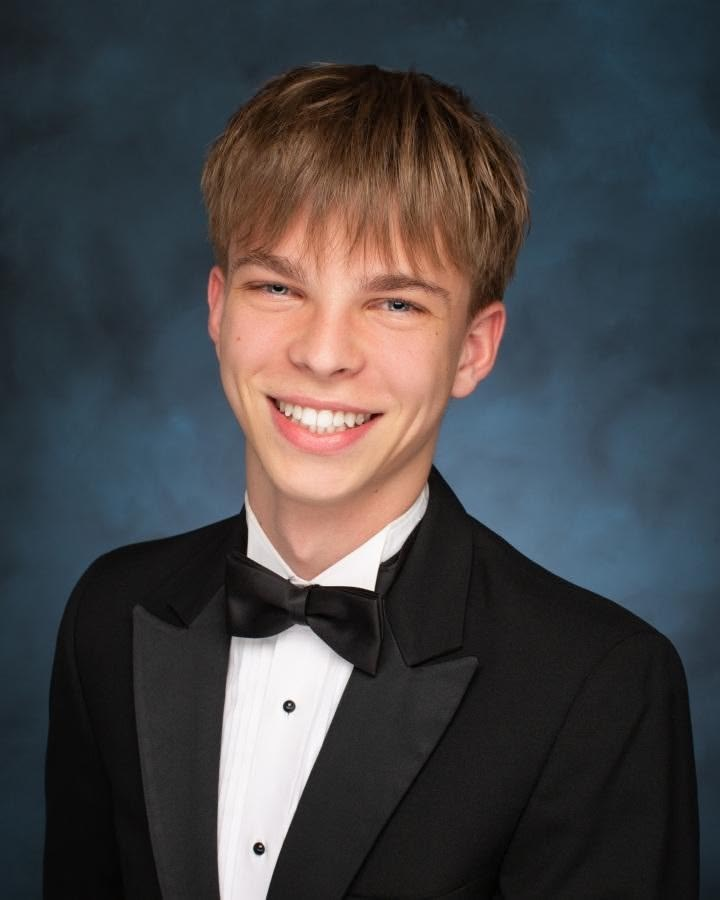
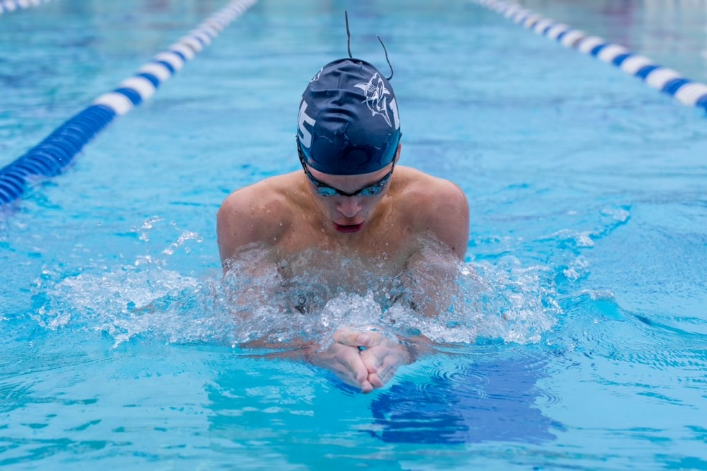
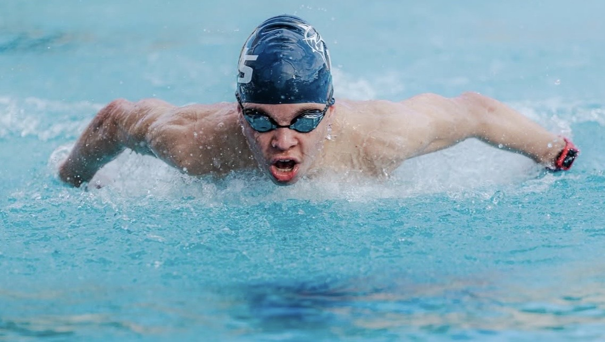
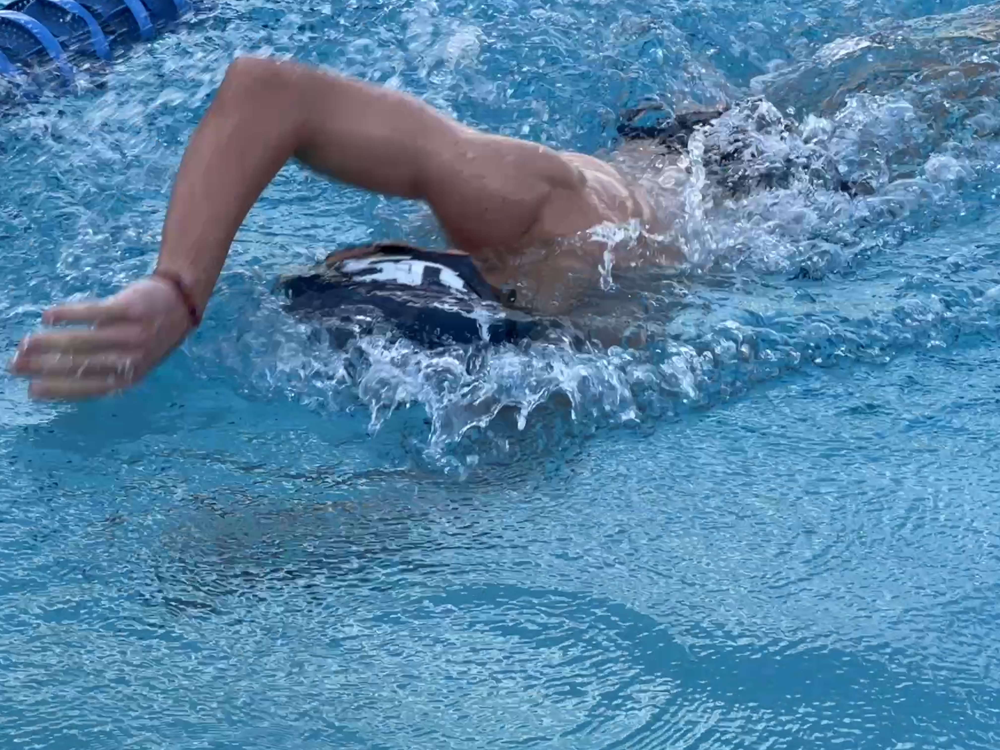
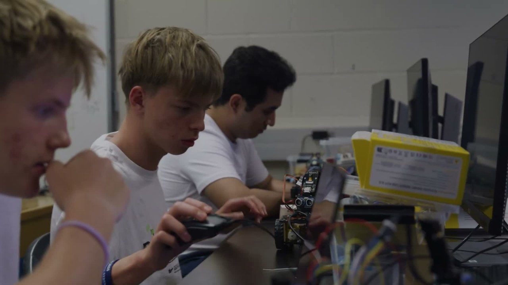

Curiosity.
In motion.
I’m a builder, programmer, and swimmer. I like turning questions into things you can see, test, and improve.


Built to move.
Programmed to perform.
On VEX Team 4154R, I write autonomous routines and driver-control code in C++ using PROS and EZ-Template. I also document the decisions, tests, and revisions behind the robot in our engineering notebook.
Our team won the South Florida State Championship, earned a Regional Triple Crown, and qualified for the 2026 VEX World Championship. For me, the real challenge is making a good run repeatable.
Explore Team 4154R ›Ideas you can
interact with.
From an AI agent that learns about the physical world through cameras to a mouse learning a maze through trial and error, I like making complex technology tangible.
Explore my projects ›Progress, one
lap at a time.
Swimming is another part of my life. It asks for patience, practice, and attention to small improvements—the same mindset I bring to building and testing with a team.
Swipe or scroll sideways to see more.



Technology is
better shared.
I co-founded Task Troopers to help seniors use technology and provide refurbished devices to students. I also mentor a middle school robotics team.
More perspectives.
Swipe or scroll sideways to see more.
